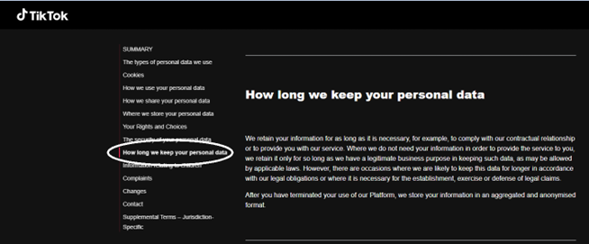

TikTok Privacy and Policy
TikTok responsibility in data distribution
According to TikTok’s Summary of Information that they retrieve from users, the highlight in regards what they do to information is as stated below:
-
Who does TikTok share your information with?
TikTok shares user data with third party service providers who help them to deliver the Platform, such as cloud storage providers. TikTok also shares user information with business partners, other companies in the same group as TikTok, content moderation services, measurement providers, advertisers, and analytics providers. Where and when required by law, TikTok will share user information with law enforcement agencies or regulators, and with third parties pursuant to a legally binding court order (As detailed in No. 7. Law Enforcement). -
How long does TikTok keep hold of your information?
TikTok retains user information for as long as it is necessary to provide users with the service. Where TikTok do not need user information in order to provide the service, they retain it only as long as they have a legitimate business purpose in keeping such data or where we are subject to a legal obligation to retain the data. TikTok will also retain user data if they believe it is or will be necessary for the establishment, exercise or defense of legal claims (As detailed in No. 7. Law Enforcement).

Screenshot of personal data duration from TikTok website
International Law
Tiktok is undeniably one of the most popular video sharing/ social media applications in the world, launched by ByteDance, a Chinese company. Tiktok has been recognized internationally as an app where you can find varying opinions from individual users around the world. Due to this, tiktok started making headlines about the privacy policy shortcomings in the international market, this has led to many disputes in different countries resulting in the ban of the application to protect national and personal privacy. As stated in Tiktok's privacy policy, they leak confidential information including userdata and app analytics to law enforcement institutions or regulators to make sure that the information spreading through the app is harmless.
Tiktok's terms and conditions vary from country to country. These connects to reasons about concerns regarding national security and personal protection of users.
- On July 2020, TikTok faced issues within the United States that lead almost to the banning of the app in the country. This is due to the speculations that TikTok has adopted a series of measures such as threat warning, trade terms and ban trading terms and etc. Later, Trump warned, unless sold in the United States business agreement, otherwise TikTok will be forced to shut down its business in the United States in a few months.
- India had also been under the same issue with the app. India's electronics and information technology (MIIT) said, according to the country's policy of the information technology act and related laws and regulations, decided to disable 59 chinese softwares, including WeChat and TikTok. These applications are engaged in the activities of "damage" to India's sovereignty and the integrity of India's defense, national security and public order. The department claimed that it received complaints from various channels, according to the above application is data security and privacy concerns. These applications on mobile or mobile devices will be disabled.
Simply put, TikTok only holds responsibility in securing personal data provided by users, but not over the malicious external activities making their way into the platform and try to infiltrate information, or rather scam users. It is rather left to the users on how will they respond to these once they fall into encounter with such.